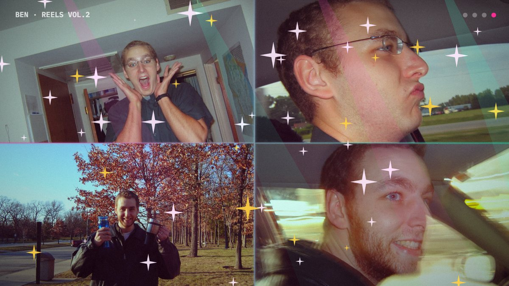
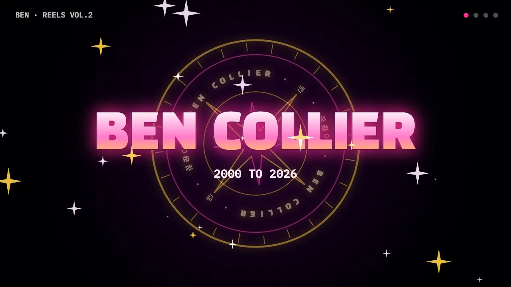
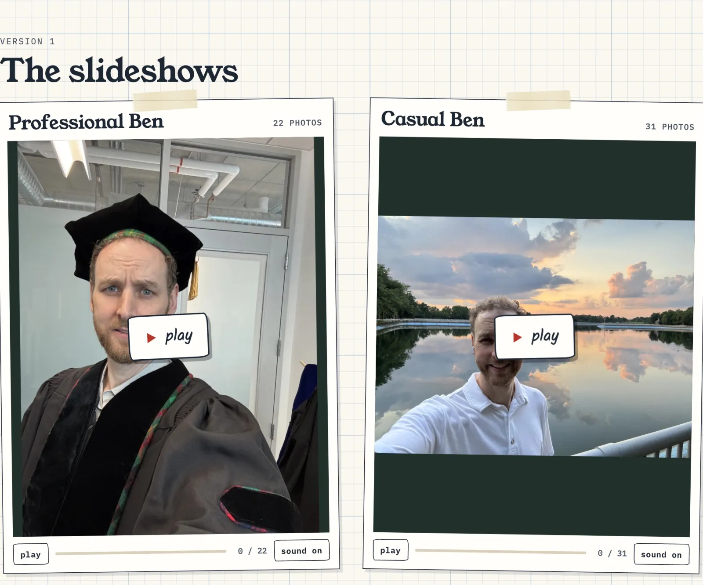
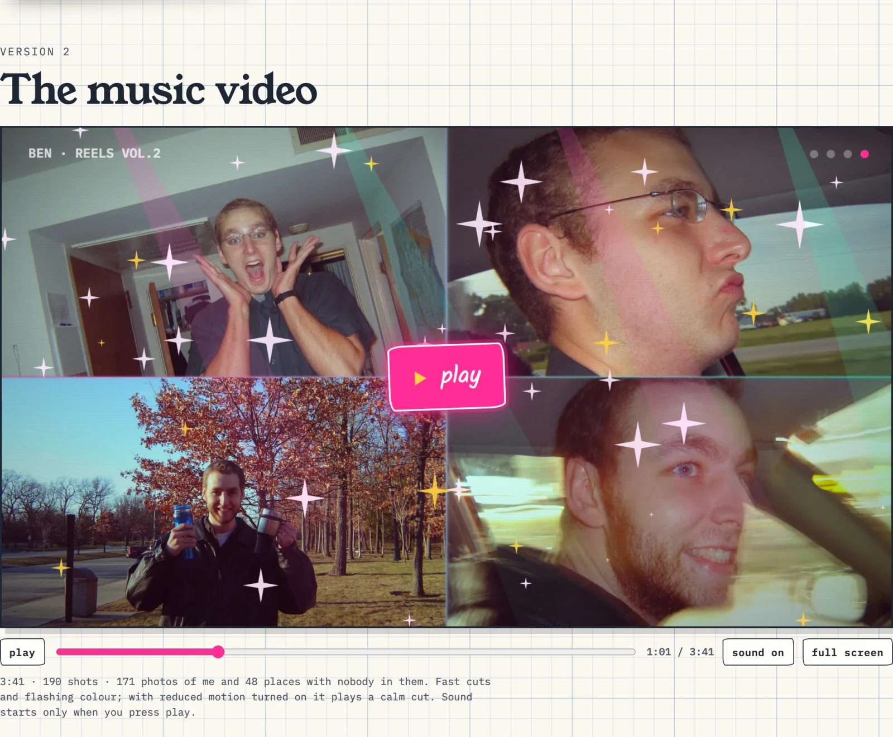
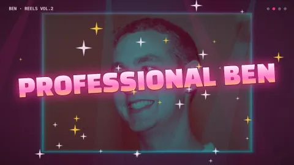
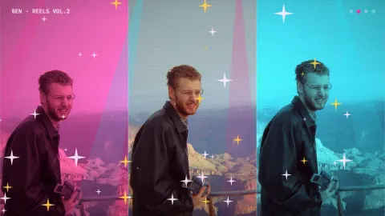
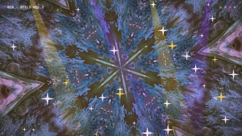
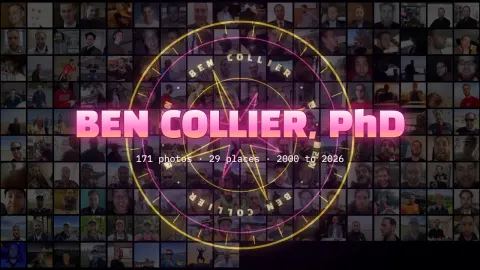
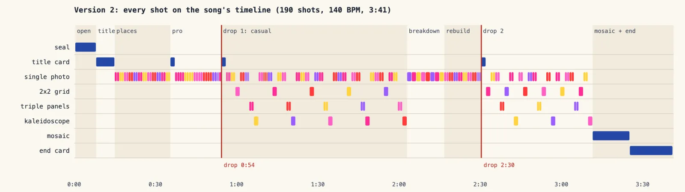

Web app · October 2026
Reels: Me, Over the Years


Python, osxphotos, Apple Vision, OpenCLIP, NumPy, WebGL, Claude Code
172 photos of me from my own photo library, 2000 to 2026, cut two ways. Version 2 is a 3:41 music video drawn live in the browser with WebGL, cut to the beat of a CC0 track in the neon style of K-pop animation. Version 1 is a pair of slideshows: me at work, and me everywhere else. I built it for Effective Coding with AI, a Carnegie Mellon course, as Project 2.
What it is
Reels is a page on my site that plays photos of me from my own Apple Photos library, cut two ways. I built it for Project 2 of Effective Coding with AI, CMU 15-113.
Version 2 is a 3:41 music video. It is drawn live in the browser with WebGL and cut to the beat of a CC0 track, in the neon style of K-pop animation. There are 190 shots: a cold open, places, Professional Ben speeding into the first drop, Casual Ben, a breakdown, a second drop, and a closing mosaic of every photo.

Version 1 is the original pair of slideshows. Professional Ben has 22 photos. Casual Ben is a 31-photo cut of 149. Each photo gets a slow pan and zoom, a taped label and folk guitar.

The rule that shaped everything: nobody else appears. Every photo is cropped until mine is the only face, or it is left out. Nothing is blurred.
A tour
The player has pause and resume, a seek bar, mute and full screen. Once the video has focus, Space or K plays and pauses, the arrow keys jump 5 seconds, M mutes and F goes full screen. Sound starts only when you press play.

Each bar of music is one letter in the script. `H` is four one-beat hits, `S` is a framed slow push, `G` is a 2x2 grid that lands one cell a beat, `P` is triple colour panels, `K` is a kaleidoscope, `X` is glitch and `R` is a riser. Title cards slam in at the section changes.








The places between my photos are 48 photos already published on my travel page, each checked by Apple Vision and by eye to have nobody in it. With reduced motion turned on in your system settings, the same cut plays without flashes, glitch, shake or spin.
How I built it
I used Claude Code with Claude Opus 5.5, in two sessions on two Macs. The first turned my question into a seven-step build brief. The second ran on the laptop that holds my Photos library. I used an agent rather than a chat window because the work needed my local library, Apple Vision, ffmpeg and a headless browser.
My first prompt was one paragraph: find about 150 pictures of my face across the years, play them like a movie with free music, make a professional reel and a casual one, and keep other people's faces out. The brief added rules of its own. Never blur, crop or skip. Sound only on play. Respect reduced motion. Never use a cloud service.
`scripts/make_reels.py` reads Apple Photos read-only and keeps photos where Photos tagged me. It drops screenshots, photos of screens, blurry and dark shots, and all but one of each burst. A local CLIP model sorts the rest into professional and casual and spreads them across the years. Apple Vision finds every face and body, and the script looks for a crop with my face and no one else's. Every published file is a fresh WebP with no metadata.
The AI got things wrong, and the fixes are the most useful part:
- The face detector missed people. On the third review pass, a toddler, a kiss and a second person at sunset had all passed. Claude added `second_look()`, which runs a newer Vision face model and a CLIP vote on the exact crop that will be published. Then every photo got a look by eye.
- A confident wrong explanation. Claude told me a filter rule had removed two years of photos. That rule had never run. It corrected itself when I asked.
- The wrong tempo. Claude cannot listen, so it measured. A plain autocorrelation read 92 BPM, a dotted hi-hat pattern. Restricting the analysis to the kick drum gave 140.0 BPM, and every cut now lands on a kick.
- A symbol it did not notice. Two overlapping triangles in the seal read as a Star of David. They became a compass rose.

For music, Claude searched the Internet Archive for albums by artists who publish under CC0 and read each album's licence field before using anything. For version 2 it downloaded five candidates and printed each one's loudness per second as a row of characters. It picked "High Technologic Beat Explosion" by Loyalty Freak Music because that shape is a music video: a long build, a hard drop, a breakdown, a second drop. Version 1 now plays "Juillet" by Monplaisir, after I asked for something warmer.
`scripts/make_reels_v2.py` is the director. It lays every shot on the measured beat grid and uses each photo exactly once, oldest to newest. `js/reels-v2.js` draws a frame from the song time alone, with one WebGL shader and a 2D canvas on top. Seeking is exact, and a script can step through the song in headless Chrome to render an MP4.
My part was the question and its rules, the creative direction (the K-pop style, folk music for version 1, a shorter casual cut) and the calls after watching. Professional Ben had too many shots of the same office wall, so it went from 29 photos to 22. The README and prompt log quote every prompt.
Decisions that mattered
- A script on my Mac picks the photos: it reads Apple Photos read-only, finds my tagged face, drops screenshots, blurry shots and bursts, and sorts the rest with a local image model. No photo goes to any online service.
- Nobody else appears. Apple Vision finds every other face and body, and each photo is cropped until mine is the only face, or it is left out. A second check runs on the final crop, because the first pass missed a toddler and a kiss.
- Version 2 is directed by code: a script measures the track's kick drum (140 beats a minute), finds the drops, and lays 190 shots on that beat grid. The browser then draws every frame from the song time alone, so seeking is exact.
- With reduced motion turned on, the same cut plays without flashes, glitch or shake.